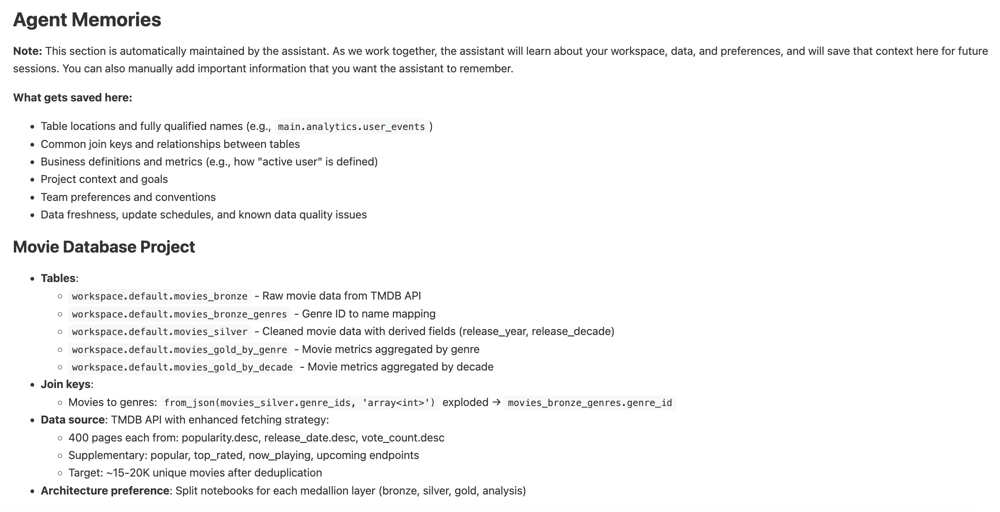
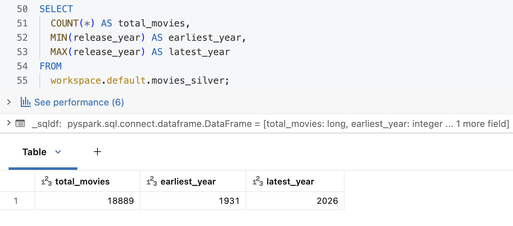
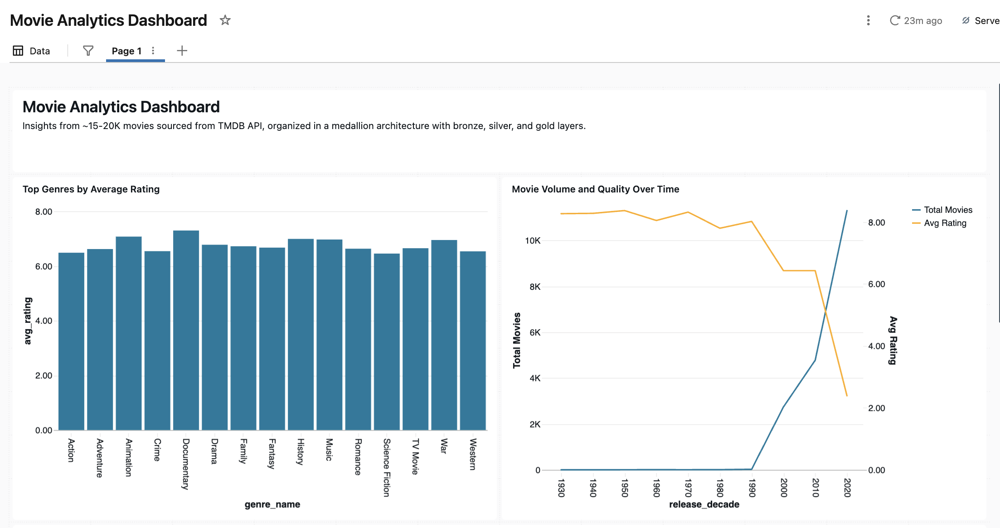
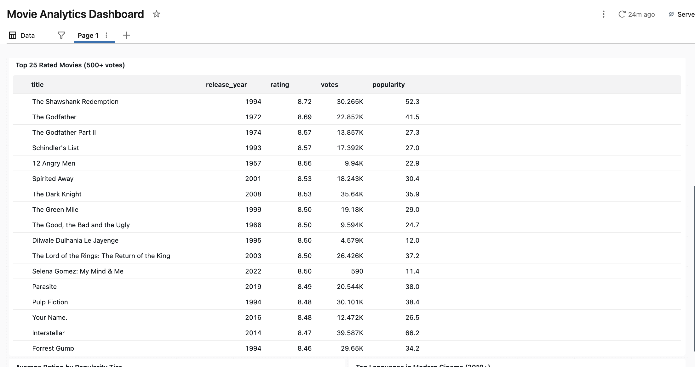
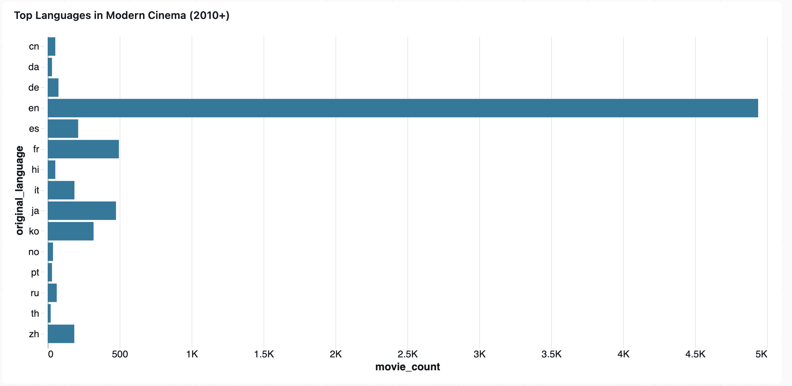

I have been using the Databricks coding assistant for a couple of years now. Over that time I have watched it grow from a basic chat tool into a full agentic coding experience, and even go through a rebrand to become what it is today: Genie Code. Each iteration was noticeably better than the last. But after the rebrand especially, it started feeling like a real development partner rather than just a smarter autocomplete.
That got me thinking. I already use it regularly in my day-to-day work, but could I get meaningfully better results by putting some intentional effort into how it is configured? There are features built specifically for this: a custom instructions file, skills, even MCP server integrations. I had not spent much time with any of them, and I decided it was time to change that.
That led me to two questions: could Genie complete an entire project without me writing a single line of code, and could it produce production-quality results while doing it?
To find out, I put together a custom instructions file and some skills, then chose a project with one rule: Genie was going to write the whole thing, not a single line of code from me. The project was a full medallion data pipeline pulling live movie data from the TMDB API, all the way through to an AI/BI dashboard. Everything is available on GitHub if you want to review the code on your own.
A Quick Look at Genie Code #
Genie Code is Databricks’ AI assistant, built into the surfaces you already work in: notebooks, the SQL editor, Lakeflow Pipelines, and dashboards. What sets it apart from general-purpose coding tools is its connection to Unity Catalog. When you are working in a notebook, Genie has access to your actual catalog — the table names, column names, data types, and lineage are all visible to it, so generated queries reference your real tables rather than placeholders.
In Agent mode, it goes further. It plans multi-step tasks, writes code, runs it against your cluster, reads the output, and keeps iterating. Context carries over as you move between surfaces during a session, so you are not starting fresh every time you switch from a notebook to the SQL editor.
Out of the box, Genie produces functional code. But there are three things you can configure to improve the quality of what it produces:
- Custom instructions: A markdown file applied globally to every interaction. Think of it as your team’s style guide, built once and enforced automatically.
- Skills: Focused, domain-specific documents loaded contextually in Agent mode, only when relevant. They live in
.assistant/skills/and can also be invoked directly by@mentioningthem. - MCP servers: Connections to external tools like Jira, Confluence, or GitHub.
For this project I focused on the first two. MCP servers are worth exploring, I just did not get into them here. Here is how I built the setup.
Step 1: Building the Custom Instructions File #
The custom instructions file is the foundation. At the user level, it tells Genie how you want your code formatted, documented, and organized, and it applies to every prompt you make.
Starting with a Prompt #
I felt like the best way to create the assistant file was to have Genie create it for me. To do that, I needed to give it a good prompt. So I reviewed some of my existing code, thought through the standards I wanted to enforce, and wrote it all out:
Help me create a genie assistant instructions md file
I write a lot of python and sql code. The instructions file should be tuned for both languages.
For Python: We should have docstrings when applicable following google coding style. Python code should have descriptive comments highlighting each logical section. We should use proper naming conventions where applicable.
For SQL: We should strive to break up the task into logical sections and use temp views rather than writing very long queries that do too much work. We should follow best SQL practices: capitalize key words, use explicit joins and aliases, and use good comments to explain the code.
Both Python and SQL should strive to have descriptive names and clear organization that can be easily understood.
For projects: We want to make sure that documentation stays up to date. If we are working in a git folder and there’s a README file, we should check that file at the end of big tasks to make sure it is still up to date. We can then actively remove stale sections and add new information relevant to the project.
This is my first time writing an assistant instructions file. Please guide me on other best practices to have. My goal is to create an instructions file that will create code quality and consistency for myself and my team members.
That produced a solid first draft. The file Genie returned covered Python style (docstrings, type hints, naming conventions, import organization, error handling), SQL formatting, medallion architecture patterns, Unity Catalog documentation standards, notebook structure, and team collaboration guidelines. It also suggested an Agent Memories section I hadn’t thought to ask for, which turned out to be one of the more useful additions.
The Instructions File Is a Living Document #
Here’s something I didn’t appreciate until I was actually building the test project: the first draft isn’t the final product. As I worked, Genie would occasionally produce something I wanted done differently. Rather than just fixing the output, I’d prompt Genie to update the instructions file. By the end of the project, the file was significantly richer and more specific than what came out of that first prompt.
Just like the project code, I never manually edited the assistant file either. Every change came through a prompt, which I thought was a pretty cool detail.
What’s in the Final File #
A few sections that had the biggest impact on code quality:
On Python comments: a specific, opinionated rule that eliminated inline end-of-line comments:
# Good - comment block at top with blank line before the code
# Retrieve API key and initialize client
# This ensures secure credential handling
api_key = dbutils.secrets.get(scope="tmdb", key="api_key")
client = MovieAPIClient(api_key=api_key)
# Bad - inline comments at end of lines
api_key = dbutils.secrets.get(scope="tmdb", key="api_key") # Get API key
On SQL structure: every clause on its own line, every query block starting with purpose, input, and output:
-- Purpose: Aggregate metrics by genre
-- Input: movies_with_genres temp view
-- Output: genre_aggregates temp view
SELECT
genre_id,
COUNT(DISTINCT movie_id) AS total_movies,
ROUND(AVG(vote_average), 2) AS avg_rating
FROM
movies_with_genres
GROUP BY
genre_id;
On when to ask vs. proceed: Guidance on how the assistant should behave, not just what it should produce. This one is specific to working with an agentic tool and ended up changing how the interactions felt throughout the project:
* Proceed autonomously for: standard code patterns, bug fixes, implementing clear requirements
* Ask before: making architectural changes, deleting code, choosing between significantly different approaches
* When unsure about business logic or data definitions, ask rather than assume
You would never write this in a regular style guide, but for an AI coding assistant it makes a real difference. It cuts down on unnecessary clarifying questions for routine work while making sure Genie pauses on decisions that actually matter.
The file also defines the split medallion architecture: separate notebooks per layer with numeric prefixes indicating execution order, with Python for bronze ingestion and SQL for silver and gold. It establishes a Unity Catalog documentation standard requiring COMMENT ON TABLE and column-level ALTER COLUMN COMMENT on every table, always including source lineage and refresh frequency.
One of the most useful things Genie added that I had not thought to ask for was an Agent Memories section at the bottom of the file. As you work on a project, Genie automatically populates this section with things it learns: table names, join keys, business definitions, data freshness. When you open a new session, it reads this and picks up with full context. After the movie project was done, mine looked like this:

Step 2: Building Skills #
Where the instructions file sets global standards, skills handle specific workflows. Each one lives in its own folder under .assistant/skills/ with a SKILL.md file. In Agent mode, a skill is loaded automatically when the context calls for it, so they stay out of the way until they are needed. For the movie pipeline project, I created two skills, and like the instructions file, both came entirely from prompting Genie.
unity-catalog-documentation: A step-by-step procedure for documenting tables and views in Unity Catalog. This is what made Genie include proper COMMENT ON TABLE statements and ALTER COLUMN COMMENT entries on every table, without being reminded on each prompt. The skill provides explicit templates:
-- For Aggregate/Rollup tables:
COMMENT '[Aggregation level] rollup of [source]. Pre-aggregated for
reporting performance. Refreshed [frequency]. Source: [upstream table].'
code-review-checklist: A comprehensive checklist covering Python and SQL quality standards. The way you use this one: at the end of a coding session, invoke it with @code-review-checklist review this notebook and Genie works through the checklist systematically, checking docstrings, type hints, naming conventions, import ordering, SQL clause formatting, Unity Catalog documentation, and more. It’s kept as a skill rather than embedded in the main instructions so it doesn’t load on every prompt, but it’s always available when you need it.
The Test: A Real Pipeline, Zero Code Written #
Now that I had the instructions file and skills in place, I needed a way to actually measure whether they worked. Writing a few test functions would not tell me much. I needed something with real complexity and enough moving parts that the standards would either hold or visibly break down.
I decided on a full medallion pipeline pulling from a live external API. This is a challenge data engineers face all the time: ingesting data through an API, cleaning and transforming it, building aggregations and analytics on top. It is not a small demo using data that is already sitting in a catalog. It mirrors the kind of work that shows up in real projects.
As a reminder, my goal was to complete this without writing any code myself. There were a couple of things I did have to do manually though. I signed up for a free developer account at The Movie Database (TMDB) and stored my API key in Databricks Secrets. Genie cannot reach outside Databricks to configure secrets, so that part was on me.
databricks secrets create-scope tmdb
databricks secrets put-secret tmdb api_key
Everything after that was prompting.
Bronze: Raw Ingestion #
The first notebook fetches from multiple TMDB endpoints and writes raw records to a Delta table. Two things immediately stood out in the generated code.
First, Genie structured the API layer as a class without being asked. It emerged from the instruction to follow object-oriented patterns:
class MovieAPIClient:
"""Client for interacting with The Movie Database (TMDB) API.
Attributes:
api_key: TMDB API authentication key
base_url: Base URL for TMDB API endpoints
session: Requests session for connection pooling
"""
def __init__(self, api_key: str, base_url: str = TMDB_BASE_URL):
if not api_key:
raise ValueError(
"API key cannot be empty. Please provide a valid TMDB API key."
)
self.api_key = api_key
self.base_url = base_url
self.session = requests.Session()
Input validation, a meaningful error message, connection pooling. These are defensive details that appeared because the instructions made them expected.
Second, the data transformation function came out with a complete Google-style docstring, type hints on both arguments and return value, and early input validation:
def flatten_movie_data(movies: List[Dict]) -> List[Dict]:
"""Flattens nested movie data from TMDB API into a tabular structure.
Converts nested JSON structures (like genre_ids arrays) into a format
suitable for DataFrame creation.
Args:
movies: List of movie dictionaries from TMDB API
Returns:
List of flattened movie dictionaries with simplified structure
Raises:
TypeError: If movies is not a list
"""
if not isinstance(movies, list):
raise TypeError(f"Expected list, got {type(movies).__name__}")
flattened = []
for movie in movies:
flat_movie = {
"movie_id": movie.get("id"),
"title": movie.get("title"),
"original_title": movie.get("original_title"),
"overview": movie.get("overview"),
"release_date": movie.get("release_date"),
"popularity": movie.get("popularity"),
"vote_average": movie.get("vote_average"),
"vote_count": movie.get("vote_count"),
"genre_ids": json.dumps(movie.get("genre_ids", [])),
"original_language": movie.get("original_language"),
"adult": movie.get("adult"),
"poster_path": movie.get("poster_path"),
"backdrop_path": movie.get("backdrop_path"),
"ingestion_timestamp": datetime.now().isoformat(),
}
flattened.append(flat_movie)
return flattened
Silver: Cleaning and Normalization #
The silver notebook is pure SQL. It filters null critical fields, coalesces numerics, and derives release_year and release_decade.
CREATE OR REPLACE TABLE workspace.default.movies_silver
COMMENT 'Silver layer: Cleaned and normalized movie data with derived fields.
Source: workspace.default.movies_bronze.'
AS
SELECT
movie_id,
title,
COALESCE(popularity, 0.0) AS popularity,
COALESCE(vote_average, 0.0) AS vote_average,
COALESCE(vote_count, 0) AS vote_count,
YEAR(TO_DATE(release_date)) AS release_year,
CAST(FLOOR(YEAR(TO_DATE(release_date)) / 10) * 10 AS INT) AS release_decade
FROM
workspace.default.movies_bronze
WHERE
movie_id IS NOT NULL
AND title IS NOT NULL
AND release_date IS NOT NULL;

Gold: Business Aggregations #
Two gold tables power the dashboard. The genre table required exploding a JSON array, joining to a lookup, and aggregating. Genie broke it into three labeled temp views rather than one large query. This is actually a practice I personally prefer. When something is complicated, I would rather split it into smaller, focused steps and build up from there. It is easier to read, easier to debug, and the instructions made this the expected approach:
-- Step 1: Explode genre_ids array for genre-level analysis
CREATE OR REPLACE TEMP VIEW movies_with_genres AS
SELECT
movie_id,
vote_average,
popularity,
CAST(genre_id AS INT) AS genre_id
FROM
workspace.default.movies_silver
LATERAL VIEW explode(from_json(genre_ids, 'array<int>')) AS genre_id;
-- Step 2: Aggregate metrics by genre
CREATE OR REPLACE TEMP VIEW genre_aggregates AS
SELECT
genre_id,
COUNT(DISTINCT movie_id) AS total_movies,
ROUND(AVG(vote_average), 2) AS avg_rating,
SUM(vote_count) AS total_votes
FROM
movies_with_genres
GROUP BY
genre_id;
-- Step 3: Join with genre names and create gold table
CREATE OR REPLACE TABLE workspace.default.movies_gold_by_genre AS
SELECT
g.genre_name,
ga.*
FROM
genre_aggregates ga
INNER JOIN
workspace.default.movies_bronze_genres g
ON ga.genre_id = g.genre_id;
The analysis notebook used LAG window functions for period-over-period comparisons, including a NULLIF guard against division by zero on the earliest decade, another unprompted defensive detail:
WITH decade_metrics AS (
SELECT
release_decade,
total_movies,
avg_rating,
LAG(total_movies) OVER (ORDER BY release_decade) AS prev_decade_movies,
LAG(avg_rating) OVER (ORDER BY release_decade) AS prev_decade_rating
FROM
workspace.default.movies_gold_by_decade
)
SELECT
release_decade,
total_movies,
ROUND(
((total_movies - prev_decade_movies) * 100.0) / NULLIF(prev_decade_movies, 0),
1
) AS pct_change_in_volume
FROM
decade_metrics
ORDER BY
release_decade;
The Dashboard #
With gold tables in place, I prompted Genie to build an AI/BI dashboard. The result was a single-page layout with five visualizations.

Documentary leads genre ratings at 7.3, followed by Animation and History. These are genres that tend to self-select more serious audiences, which likely explains the higher ratings. The volume-over-time chart shows a sharp rise starting around 2000, but that is worth taking with a grain of salt. The ingestion strategy specifically targeted popular and recent films, so the dataset is naturally skewed toward modern releases. What the chart reflects is the shape of the dataset, not necessarily film production history.

The top movies table includes a 500-vote minimum filter Genie added unprompted. Shawshank at 8.72, The Godfather at 8.69. Selena Gomez: My Mind & Me at 8.50 with only 590 votes. She appears because the table sorts by rating first, and several films tie at 8.50. At 590 votes, she just clears the minimum to make the list.

The language chart shows strong English dominance, with meaningful representation from Japanese, Korean, and French cinema.
The Results #
Looking at the results across four notebooks and hundreds of lines, the setup clearly made a difference. The code was consistent in a way that is hard to achieve even when writing it yourself. Functions had proper docstrings, SQL was organized into labeled temp views with purposeful comments, and Unity Catalog documentation showed up on every table. Small defensive coding details appeared throughout without being explicitly requested. None of it required reminding Genie from prompt to prompt. It was already there because the instructions made it the default.
Wrapping Up #
Going back to the two questions I started with: yes, Genie completed the entire project without me writing a single line of code, and yes, the code quality was there. Not just functional, but consistent and well-documented across the whole thing.
The bigger takeaway for me was how little it takes to get meaningfully better results. A prompt to generate the instructions file, a couple of skills, and some refinement along the way. None of it was complicated.
If you are already using Genie Code and have not set up a custom instructions file yet, that is the first thing I would do. Describe your standards and let Genie write the file for you. You will notice the difference quickly.
The full project code is on GitHub. The TMDB API has a generous free tier, and the pipeline runs on a Databricks Community Edition workspace.
Sources: